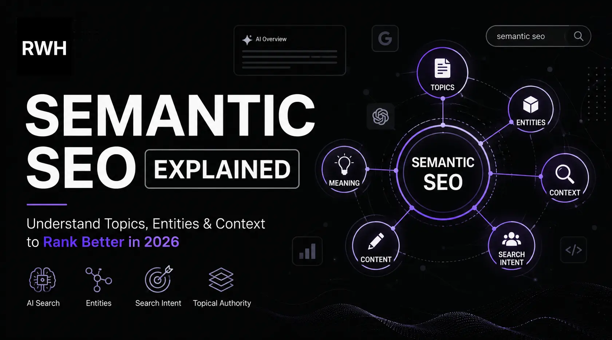

Understand what semantic SEO is, how Google reads topics and entities, and how to build content that ranks in traditional search and AI Overviews.

Think about how you actually search online. You rarely type a single keyword like "coffee." You might search for "why does my coffee taste bitter" or "best brewing method for light roast beans at home." You are not searching for a word. You are looking for an answer to a real question.
Google knows this. And that shift in how search engines process language is exactly what semantic SEO is built around.
If you are still writing content by targeting one keyword per page and calling it done, you are leaving rankings, impressions, and organic traffic on the table. Modern SEO is about meaning, context, and topical depth, not keyword repetition.
This guide breaks down what semantic SEO actually is, how it works, and what you can do today to build content that performs well not just in traditional search but also in AI Overviews and featured snippets.
Semantic SEO is the practice of optimizing content around the full meaning and context of a topic rather than targeting a single keyword. The goal is to help search engines deeply understand what your content is about so it can serve it to the right users at the right time.
Instead of asking "how many times should I use this keyword," semantic SEO pushes you to ask "have I fully covered what a person searching this topic actually needs to know?"
It involves using related terms, addressing connected subtopics, building contextual relevance, and creating content that answers the broader intent behind a search, not just the literal words in a query.
Semantic SEO works because search engines like Google do not read content the way a human skims a page. They analyze the relationships between concepts, the entities mentioned, the overall topic structure, and whether your content genuinely satisfies the search intent behind a query.
A few years ago, you could rank a blog post simply by stuffing a keyword into the title, URL, and headings a certain number of times. That approach stopped working reliably a long time ago, but many bloggers and site owners are still writing content with that old mindset.
In 2026, Google's understanding of language and context has grown significantly more sophisticated. With updates like Hummingbird, RankBrain, BERT, and the ongoing development of Search Generative Experience and AI Overviews, the search engine now focuses on meaning rather than exact matches.
Here is why this matters practically:
Semantic SEO is not a trend. It is the logical response to how search engines now work.
| Aspect | Traditional Keyword SEO | Semantic SEO |
|---|---|---|
| Focus | Exact-match keyword repetition | Topic meaning and context |
| Content Strategy | One keyword per page | Topic clusters with related subtopics |
| Optimization Signal | Keyword density | Contextual relevance and entity coverage |
| User Intent | Often ignored or guessed | Central to content structure |
| Search Engine Fit | Works with older algorithms | Aligned with BERT, MUM, AI Overviews |
| Content Depth | Thin, keyword-stuffed pages | Comprehensive, authoritative coverage |
| Internal Linking | Ad hoc or minimal | Structured around topic clusters |
| Long-term Performance | Vulnerable to algorithm updates | More resilient and future-proof |
Google does not read your article the way a reader does. It processes your content through multiple systems that analyze language, relationships between concepts, and how your content connects to broader topics on the web.
Three things sit at the center of this process: natural language processing, entity recognition, and the Knowledge Graph.
Google uses NLP to understand what words mean in context, not just what they say literally. The word "apple" in an article about recipes means something entirely different from "apple" in a technology article. Google can tell the difference based on surrounding context, which means your content should naturally reflect the topic it is covering through varied and relevant language.
An entity is any real-world concept, person, place, brand, or thing that can be distinctly identified. When Google reads your content, it identifies entities and understands how they relate to each other. If you write an article about espresso machines, Google recognizes espresso, barista, crema, extraction pressure, and Italian coffee culture as related entities, not just separate words.
Google's Knowledge Graph is a vast database of entities and their relationships. When your content clearly establishes connections between entities that exist in the Knowledge Graph, Google better understands what your page is about and which search queries it is relevant for.
This is why writing content with breadth and depth across a topic naturally outperforms content that just repeats one keyword across 1,500 words.
Semantic search refers to a search engine's ability to understand the intent and contextual meaning behind a query rather than just matching the words in it.
Before semantic search, if you typed "best way to make coffee at home," a search engine would look for pages containing those exact words. Now, Google interprets the intent behind that query and knows you are looking for home brewing methods, even if a result uses different phrasing like "how to brew excellent coffee without a machine" or "at-home barista techniques."
For content creators, this means that ranking for a topic no longer requires using a specific keyword in every paragraph. It requires writing content that genuinely serves the meaning behind the searches people are making.
Semantic search also powers voice search and conversational queries, which continue to grow. When someone asks a smart device "what is the difference between Arabica and Robusta beans," the results served come from content that has covered coffee topics comprehensively, not just pages that contain the exact phrase.
This is one of the most important mental shifts in modern SEO. A keyword is a specific phrase. A topic is the full territory of meaning around a subject.
Take the example of a blog about coffee brewing. The keyword approach might focus purely on the phrase "best coffee brewing methods." A topic-based approach recognizes that someone interested in this subject probably also wants to understand the difference between pour-over and French press, how grind size affects extraction, the right water temperature for different roast levels, and why their coffee might taste bitter or sour.
All of those subtopics live inside the broader topic of coffee brewing. If your content covers most of them thoughtfully, you are signaling to Google that your site has genuine topical depth on the subject.
Keywords still matter. They help you understand what people are searching for and how they phrase their questions. But the organizing principle behind your content strategy should be topics and the intent that surrounds them, not keyword lists.
This connects directly to how you structure your overall content strategy. If you want to go deeper on building content around what users are actually looking for, the guide on search intent for SEO covers this in full detail.
Search intent is the underlying reason behind a query. Is someone trying to learn something, find a specific site, compare options before buying, or complete a transaction? Google classifies intent broadly into informational, navigational, commercial, and transactional categories.
Semantic SEO and search intent are deeply connected because Google is trying to surface content that matches not just the words of a query but the purpose behind it.
If you write a comparison article but your page reads like a product listing, you are misaligned with intent. If you write a beginner guide using expert-level jargon with no explanation, you are misaligned with your audience's needs.
Practical ways to align semantic content with search intent:
When your content satisfies search intent completely, people stay on your page longer, they engage with it, and they are less likely to bounce back to Google looking for a better answer. These signals feed back into rankings.
An entity, in SEO terms, is any concept that can be distinctly recognized and described. It does not have to be a physical thing. Entities include people, brands, places, events, concepts, and even ideas that can be uniquely identified and distinguished from other things.
For example, in an article about Italian coffee culture, entities might include espresso, cappuccino, Milan, the Bialetti stovetop brewer, and Italian breakfast tradition. These are all distinct, identifiable things that Google understands and connects in its Knowledge Graph.
Entity-based SEO is the practice of writing content in a way that clearly establishes the entities relevant to your topic and demonstrates how they relate to each other. This helps Google map your content to the correct topic space and evaluate how thoroughly you cover it.
Practical things you can do to improve entity coverage in your content:
A topic cluster is a group of content pieces that collectively cover a subject area in depth. The structure typically involves a central pillar page that covers the broad topic at an overview level, with several supporting cluster pages that go deep on individual subtopics.
The pillar page links out to the cluster pages. The cluster pages link back to the pillar. This creates an interconnected web of content that signals to Google that your site has genuine authority on the subject.
Using the coffee brewing example again: your pillar might be a comprehensive guide to home coffee brewing. Your cluster pages might cover French press technique, pour-over ratios, choosing a grinder, water temperature and chemistry, and espresso extraction basics. Each cluster page dives deep into one aspect that the pillar only summarizes.
This structure works for several reasons. It creates clear internal linking pathways that help Google crawl and index your site efficiently. It demonstrates subject matter depth. And it tends to satisfy a wider range of search queries around a topic because different pages serve different search intents within the same subject area.
Building topical authority through this kind of structured content is one of the most effective long-term SEO investments you can make. The dedicated guide to topical authority in SEO walks through how to plan and build this systematically.
Here is how to actually put semantic SEO into practice when creating or improving content.
Before writing, map out everything a person might want to know about your subject. What questions do beginners ask? What do intermediate-level readers need? What comparisons, definitions, and examples would make the topic fully clear? Use this as your content outline.
Write the way a knowledgeable person would naturally explain a topic. If you are covering espresso, you will naturally mention crema, pressure, extraction, tamping, portafilter, and espresso-to-water ratio. These are semantically related terms that reinforce your topic relevance without keyword stuffing.
Think about where your reader is in their understanding. Answer the basic what and why questions at the start, then move into how and practical examples. Covering the full search journey on a topic reduces pogo-sticking, which is when users click back to Google immediately after landing on a page.
JSON-LD schema for Article, FAQPage, HowTo, and Product types helps Google parse your content's entities and intent directly. This supports both traditional rankings and AI Overview visibility.
Internal links should connect semantically related content, not just random pages. A strong internal linking structure helps Google understand the relationship between your pages and reinforces topical clusters. The guide on internal linking strategy explains how to build this correctly.
Even bloggers who understand semantic SEO in theory often make these mistakes in practice.
Before publishing any piece of content, run through these points:
The rise of AI Overviews in Google Search has made semantic SEO more important than ever. AI Overviews are generated summaries that appear at the top of some search results. They pull from multiple sources and synthesize answers to complex queries.
To be referenced in an AI Overview, your content needs to do more than rank. It needs to be clear, well-structured, and genuinely comprehensive on the topic it covers. Google's AI systems look for content that can be summarized, cited, and trusted as a reliable source on a subject.
This means:
Semantic SEO and AI search visibility are not separate goals. The same principles that help you rank in traditional search, covering topics fully, structuring content clearly, and writing for intent, also make your content more usable by AI systems.
The bloggers and site owners using resources like Rank With Hitesh to build their SEO knowledge are positioned well for this shift because the fundamentals they are learning align directly with where search is heading.
If you want to understand how to write content that performs across all these dimensions, the guide on SEO content writing is a strong next read.
Semantic SEO is not a complex technical concept once you understand what it is actually asking you to do. It is asking you to write content that genuinely covers a topic the way a knowledgeable person would, using natural language, addressing real questions, and building depth across a subject rather than chasing a single keyword.
Google has been moving in this direction for over a decade. With AI Overviews and entity-based search now shaping how results are generated and presented, content that was already well-aligned with semantic principles has a structural advantage.
Start by picking one topic your site covers. Map out every subtopic and question a real reader might have. Build or improve your content to cover that full territory. Link the pages together. Add schema where it fits. That is semantic SEO, and it works.
Semantic SEO is the practice of optimizing content around the full meaning and context of a topic rather than targeting a single keyword. It involves covering related subtopics, using naturally varied language, and aligning content with the actual intent behind search queries so that search engines can deeply understand what your page is about.
Yes, keywords still matter, but not in the way they used to. Google uses keywords as signals to understand what a page is about, but it also analyzes context, related concepts, and the overall topic coverage of a page. Writing the same keyword repeatedly does not help rankings the way it once did. Writing content that fully addresses the topic behind a keyword is what Google's current algorithms reward.
In SEO, an entity is any distinctly identifiable concept, person, place, brand, or thing. Google's Knowledge Graph maps entities and the relationships between them. When your content clearly references relevant entities and demonstrates how they relate to each other, it helps Google understand your content's topic and match it to the right searches.
Traditional keyword-based SEO focused on placing specific phrases into content a certain number of times to signal relevance. Semantic SEO focuses on covering a topic comprehensively, using natural language, addressing search intent, and demonstrating topical authority through depth and related content. The two are not mutually exclusive, but the organizing logic behind them is different.
Yes, it does. AI Overviews are generated from content that is comprehensive, well-structured, and clearly covers the topic behind a query. Pages that are built around semantic principles, with clear headings, FAQ sections, full topic coverage, and entity clarity, are more likely to be cited in AI-generated search summaries than thin or narrowly focused pages.
Explore more practical SEO, blogging, keyword research, and digital marketing guides built for beginners and growing websites.
Read More Blogs